배경 : Non IP MMORPG가 겪는 인식 문제.
'아키텍트: 랜드 오브 엑자일'은 아쿠아트리에서 개발하고 하이브IM에서 퍼블리싱하여 2025년 10월에 출시한 신작 MMORPG IP다. 이 프로젝트에서 우리는 이
IP를 소개하는 공식 웹사이트 제작을 담당했다.
2017년 엔씨소프트의 리니지M 성공 이후, 국내 MMORPG 시장은 소위 '리니지라이크'라 불리는 장르 구조가 주류가 되었고, 중세 유럽 판타지 세계관과 전사 ·
궁수 · 마법사 등, 검증된 클래스 체계가 관습처럼 반복되었다. 이에 신규 IP는 출시 이전부터 리니지라이크 프레임 안에서 먼저 해석하려는 경향이 형성되었고,
'아키텍트: 랜드 오브 엑자일' 역시 이 환경에서 자유로울 수 없었다.
2025년은 '이미르 오브 레전드', '뱀피르', '아이온2' 등, 동 장르의 신작들이 대거 출시되는 시기였다. 이 신작들의 경쟁 구도에서 기존 장르적 선입견을 넘어
아키텍트 IP만의 매력을 전달할 수 있는 새로운 첫인상 형성 전략이 필요하다고 판단했다.
이에 우리는 실제 플레이 전, 유저가 먼저 접하는 매체인 공식 웹사이트의 경험을 변화시키면, IP의 첫 인상과 브랜드 인식에도 영향을 줄 수 있는지를 검증하고자
했다.
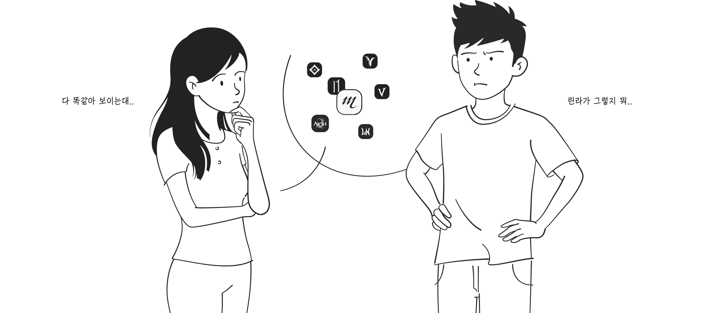
문제 발견 : 기존 공식 웹사이트의 구조적 한계
현재 라이브 중인 국내 MMORPG 공식 웹사이트의 게임 소개 섹션을 살펴보았고, 대부분 아래와 같은 구조로 이루어져 있었다.
2024 G STAR 당시 공개된 아키텍트 티저 웹사이트도 이와 같았다.
- 4개 내외의 단락으로 구성된 세계관 텍스트 + 이미지 또는 짧은 루핑 영상 배경.
- 태초의 신 → 재앙 → 영웅 등장으로 이어지는 범위가 넓고 방대한 서구권 중세 판타지 서사 구조.
물론 이 내용이 문제가 있는건 아니다. 대중화된 기독교적 구원 서사에서 차용된 세계관은 공감대를 이끌 가능성이 높기 때문이다. 다만, 진부함 또한 느낄 가능성도
높으며, 다루는 범위가 넓어 각 IP가 지닌 세부 서사에 깊이 접하기 어렵다는 한계를 가진다.
결과적으로 기존 형성된 장르 인식 기준으로 게임을 판단하게 되며, 초기 인상 형성 역할은 수행하지 못하고 있었다.
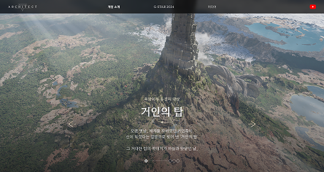
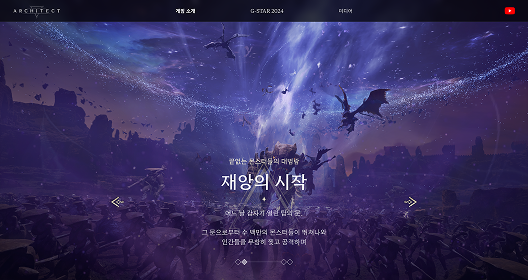
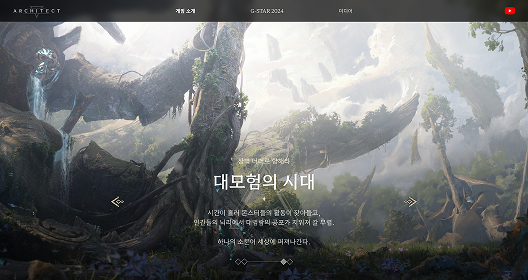
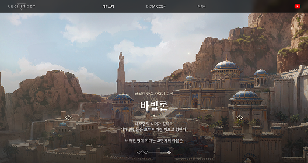
2024 G Star 아키텍트 티저 웹사이트
환경의 변화 : 유저의 게임 인지 경로 변화.
과거 게임 소개 웹사이트는 명칭 그대로 게임을 소개하는 정보 전달 역할을 했다.
그러나 유튜브, 치지직 등, 스트리밍 플랫폼의 영향력이 커지면서 유저들은 더 이상 공식
웹사이트가 아닌 스트리머의 콘텐츠를 통해 게임을 접하기 시작했다.
2024 G STAR 아키텍트 티저 웹사이트의 데이터는 이를 명확히 보여준다.
전체 방문자의 92.5%는 게임 소개 섹션에 진입조차 하지 않았고, 진입한 소수 유저의 체류 시간도 페이지당 평균 5초에 불과했지만, 영상 콘텐츠 혹은 라이브
스트리밍에서는 수 분에서 수 시간씩 몰입한다.
이는 기존 정보 나열식 웹사이트가 흥미를 유발하는 데 한계가 있음을 의미하며, 이에 게임 소개 웹사이트의 역할에 대해 다시 정의할 필요가 있었다.
7.5
%
게임 소개 섹션 방문율
전체 PV 대비 7.5%
쿠키 동의 기준 UV 1.5%
72.9
%
게임 이용자의 72.9%가
게임 방송 시청
한국 갤럽 조사 연구소
정보 탐색의 출발점이 공식 웹사이트에서 스트리밍 플랫폼으로 이동
5
sec
페이지당 평균 체류 시간 약 5초
단 소수의 장시간 체류를 제외하면,
대다수 유저는 2초 이내
이탈
45
% up
2024년 1년 동안 게임 방송
시청 시간 45% 증가
유튜브 코리아
유저의 시간은 공식 웹사이트가 아닌 스트리밍에 소비
아이덴티티 리서치 : 유저가 반응하고 기억되는 요소의 기준 탐색.
스트리밍과 클립 중심으로 콘텐츠를 소비하는 환경에서는 세계관 혹은 클래스를 설명하는 정보는 충분히 전달되지 않는다. 유저는 게임을 이해하는 것이 아니라, 특정 장면과
스트리머의 반응을 통해 순간적으로 인지한다. 따라서 남는 것은 정보의 양이 아니라, 즉시 인지되는 하나의 요소였다.
예를 들어 스텔라 블레이드 '이브'의 실루엣, 뚝배기로 불리는 배틀그라운드의 '헬멧'과 개그 요소로 인지되는 '프라이팬', 블소의 빌런 페르소나 '진서연'처럼 강력한
IP들은 복잡한 설명 없이도 하나의 시각적 혹은 정서적 요소만으로 유저의 반응을 유도하고 이후 게임을 대표하는 이미지로 기능한다.
이에 본격적인 프로젝트에 앞서, 유저의 반응을 이끌고 기억에 남을 수 있는 요소가 무엇인지 찾기 위해 캐릭터, NPC, 아이템, 심볼 등, 범주를 나누어 레퍼런스
리서치를 진행했다.
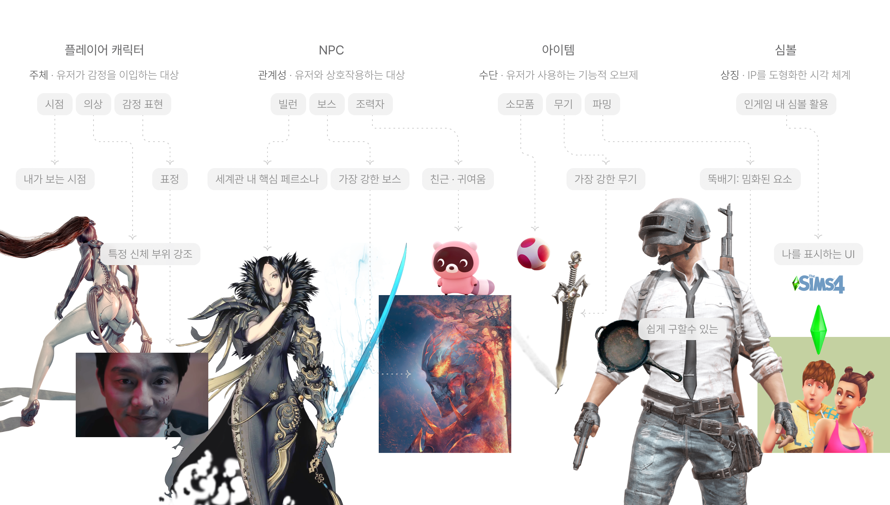
타겟 정의 : 유저 성향에 따른 아이덴티티 방향성 결정.
국내 MMORPG 유저층은 PVP 경쟁 중심의 '쟁 유저층'과 스토리와 모험을 즐기는 PVE 중심의 '라이트 유저층'으로 양분된다.
두 집단의 플레이 동기는 상반되기에, 아이덴티티 요소를 선정하기에 앞서, '아키텍트'가 타겟하는 유저층에 대해 사업 및 개발사에 질문했다.
당시 구체적인 BM이 확정되기 전이었음에도 오픈월드 내 다양한 상호작용을 통한 PVE 콘텐츠를 강화해 '라이트 유저층'을 확보하고 싶다는 답변을 받았다.
만약 쟁 유저층을 타겟한다면 성취를 증명하는 가장 강한 무기나 보스를 내세웠겠지만, 서사 몰입과 감정 연결을 중시하는 라이트 유저층을 공략하기 위해, 캐릭터의 감정과
내면을 직관적으로 전달할 수 있는 페르소나를 아이덴티티로 설정했다.
특히 미세한 표정 변화를 핵심 시각 장치로 활용해, 텍스트 이상의 감성적 몰입을 전달하고, 이를 구현할 수 있는 기술적 완성도를 함께 드러내는 방향을 선택했다.
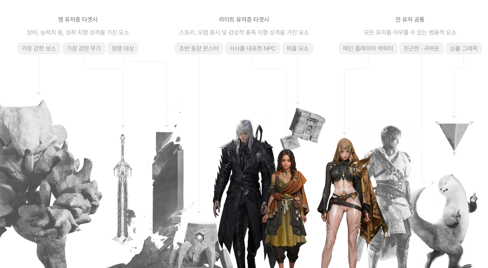
해결 전략 : 정보 전달 매체에서 경험 형성 매체로서 게임 소개 웹사이트의 역할 전환.
스트리밍 환경에서 게임 정보는 직접 탐색되기보다 스트리머를 통해 재생되고, 유저가 이를 관찰하는 방식으로 소비된다. 따라서 이 웹사이트의 타겟은 페이지에 직접
접속하는 개인에 한정되지 않고, 스트리밍 콘텐츠를 시청하는 간접 이용자까지 포함해야 한다고 보았다.
이에 직접 방문자의 체류 시간을 늘리는 대신, 유저가 장시간 머무르는 스트리밍 시청 맥락 안에서 웹사이트가 소비되도록 접근 방식을 전환했다. 즉 웹사이트를 개인이
읽는 정보 페이지가 아니라, 스트리머가 방송 중 함께 탐색하고 반응할 수 있는 구조로 설계했다.
웹의 서사는 정독을 전제로 하기보다, 스트리밍 흐름 속에서 자연스럽게 활용되는 '반응 유도 장면'의 연속으로 구성되었다. 이에 따라 방대한 세계관을 4~5문단으로
요약해 나열하는 방식 대신, 앞서 선정한 아이덴티티 페르소나를 활용해 짧은 장면만으로 강렬한 인상을 남기도록 했다.
페르소나의 감정선에 따른 정서적 공감 형성을 중심에 두어, 웹사이트를 정보 제공 공간이 아닌 게임 감각이 전이되는 접점으로 재정의했다. 특히 스트리머가 특정 연출이나
페르소나의 미세한 표정에 반응하며 "이 표정 좀 봐"라고 말하게 되는 순간을 기획의 핵심으로 설정했다. 이는 텍스트 설명보다 2차 소비 주체의 반응을 촉발하여 IP의
인상을 각인시키는 가장 효과적인 장치라고 판단했다.
“
5초 만에 이탈하는 웹사이트에 유저를 붙잡는 대신, 수시간 몰입하는 스트리밍 맥락 안에서 소비되도록 웹사이트 역할의 전환.
이는 정보 페이지가 아니라 스트리머의 중계용 대본으로서, 이해가 아닌 반응을 만들고, 그 반응이 기억되는 인상으로 남긴다.
서사 설계 : 페르소나 중심 시나리오 및 연출 구조 제안.
앞서 아이덴티티 선별 과정에서 서사가 담긴 '페르소나'를 아이덴티티로 설정하고 감정선에 따른 '표정'을 주목했다. 이에 세계관 내 핵심
인물인'사이카라드','플레이어', '제로스'를 선정하고, 인물별 핵심 키워드를 선별했다.
개발사로부터 제공받은 세계관 문서를 AI(Google Gemini Enterprise)에 학습시킨 후, 선별한 키워드를 바탕으로 프롬프트를 작성하고 스토리텔링을
도출했다. 그리고 각 스토리에 알맞는 웹 구조와 인터랙션 연출을 적용하여 아래 3가지 안을 제안했다.
1안. 사이카라드 ver.
'1화의 법칙' 적용
- 인게임 진입 시 첫 화면(중추가 부서진 탑)과 튜토리얼 컷신 (할아버지의 죽음과 소녀 사이카라드 환생) 의미 및 배경 전달.
- 게임 초반 접하는 내용을 다뤄, 실제 인게임 초반 몰입도 극대화.
원스크롤 방식
- 고대의 비극 → 현재의 재건 → 플레이어의 등장 순서로 전개. 이를 관찰하는 '사이카라드'의 시점과 감정선으로 여정을 따라가는 흐름.
핵심 스토리
- 시간적 배경 : 고대
고대 마을, 인류 구원을 위한 현자의 제안으로 탑이 건설되는 중, 탑을 향한 욕망의 황제와 현자의 갈등으로 탑의 중추가 파괴되고, 이를
지켜본
탑의 관리자 '사이카라드'의 고뇌.
- 시간적 배경 : 현재
1만년이 지나 탑 최상층에서 버려진 땅을 관망하던 사이카라드. 황제의 기운을 가진 플레이어 '엔키아'를 발견하고, 흥미를 느껴 그를
탑으로
이끌며 여정이 시작됨.
2안. 플레이어 ver.
자기 참조 효과(SRE) 적용
- 플레이어의 성장 과정을 실제 인게임 1인칭 시점으로 미리 체험하는 튜토리얼 개념.
- 인게임 시점을 통해 정보 기억력을 높이고 몰입감 극대화.
4섹션 맥락화
- 유저에게 익숙한 세계관 -> 클래스 → 월드 → 콘텐츠 순서로 게임 USP (Unique Selling Proposition)가 서사로
녹아듦.
- 정보 간 단절 없는 유기적 맥락화로 세계관 몰입도를 높임.
핵심 스토리
- 세계관 : 버려진 땅, 그리고 전투
버려진 땅의 유적 탐색 중 고대 병기의 습격과 발견한 탑의 실마리.
- 클래스 : 단서 발견
고대 병기를 물리치고 획득한 결정적인 단서와 환영 지도 발견.
- 월드 : 탑을 향한 여정
환영 지도를 따라 거인의 탑으로 향하는 광활한 세계를 탐험.
- 콘텐츠 : 시련을 넘어 탑으로
월드 곳곳의 퍼즐과 분쟁을 돌파하며 마침내 거인의 탑 앞에 당도.
3안. 제로스 ver.
선 vs 악 서사적 대조의 극대화
- 우호 세력이던 '제로스'가 적대 세력으로 변하는 배경 서사를 다룸.
- 동료에서 적수로 변모하는 제로스의 타락 서사를 시각적으로 대조하여, 필연적 대립에 대한 서사적 긴장감 극대화
1:1 화면 분할 구조
- 첫 화면에서 유저가 선택한 플레이어의 성장 과정이 좌측에 전개되며, 이에 따른 제로스의 감정 변화를 우측에 배치해 탑을 향한 여정 간,
두
캐릭터의 감정선을 동시에 경험.
핵심 스토리
- 감정의 변곡점
플레이어의 성장이 제로스에게는 시기, 질투, 두려움으로 다가오는 과정을 묘사하여 우호→ 적대로 변해가는 감정선을 섬세하게 추적.
- 숙명적 조우
여정의 끝, '탑 중층'에서 기다리고 있는 제로스와의 1:1 대치 예고. '가장 믿음직했던 동료가 가장 위험한 적이 된다'는 서사적
장치를 통해
인게임 메인 이벤트에 대한 몰입도와 플레이 욕구를 최고조로 견인.
의사 결정 : 시나리오 안 확정 및 연출 방향 결정.
게임을 직접 개발하지 않은 퍼블리싱사 입장에서, 게임의 서사를 재구성하는 작업인 만큼, 개발사와의 긴밀한 공감대 형성과 검토 과정은 필수적이었다. 우리는 기획 의도를
시각적으로 명확히 전달하기 위해 기존 리소스와 리서치 레퍼런스는 물론, 생성형 이미지 AI를 활용하여 실제 웹 페이지 연출안을 가시화해 공유했다. 결과적으로 세 가지
시나리오 모두 각 인물의 서사와 연출이 조화롭고 시리즈물과 같은 시너지가 기대된다는 긍정적인 평가를 이끌어냈다.
하지만 새로운 서사를 구현하기 위한 추가 리소스 제작 부담과 출시 일정에 따른 개발사 지원의 한계 등 현실적인 제약 사항이 존재했다. 따라서 3개 안 중, 한가지
안을 선택하기로 협의했으며, Non IP 상황에서 유저에게 초반 개연성을 효과적으로 전달할 수 있는 사이카라드 Ver을 최종 확정했다. 다만 원스크롤 방식의 피로도를
고려해, 2안의 4섹션 구조로 맥락화해 가독성과 서사적 깊이를 동시에 확보하는 방향으로 연출안을 수립했다.
원스크롤 구조 / 사이카라드 ver.
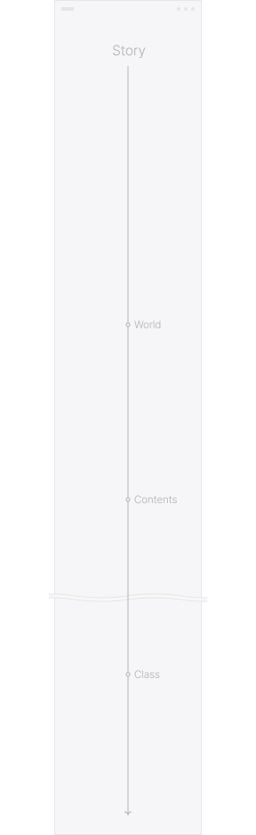
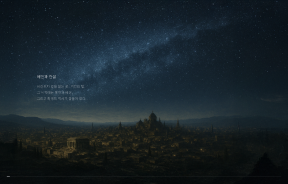
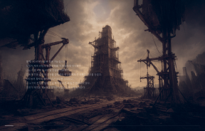
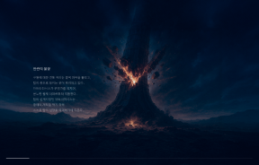
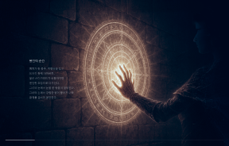
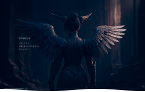
4섹션 구조 / 플레이어 ver.
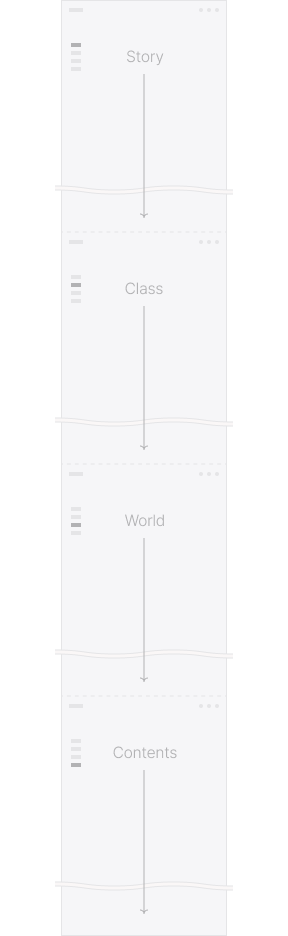
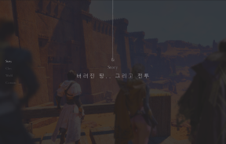
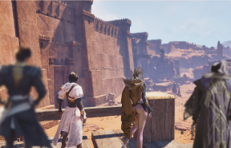
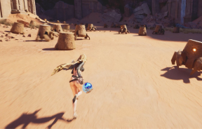
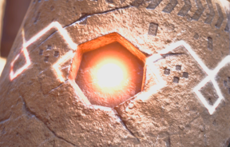
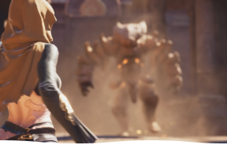
1:1 분할 구조 / 제로스 ver.
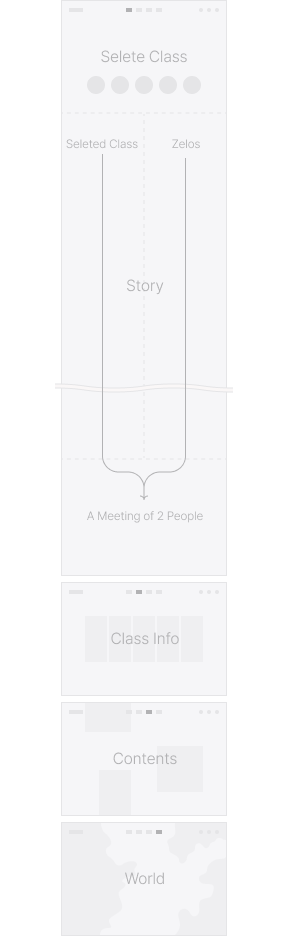
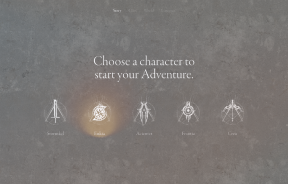
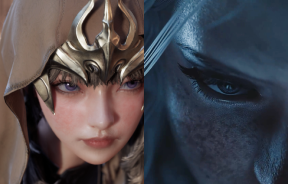
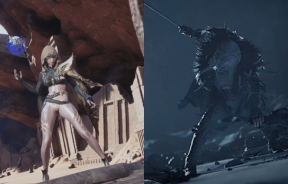
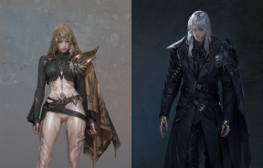
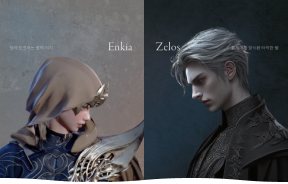
실무 전개 : 개발사 피드백 반영 후, 최종 시나리오 확정 및 실 업무 시작.
본격적인 실무 단계에서는 기술적 제약 극복을 위해 다각도의 협업을 리딩했다. 최종안 확정 후, 개발사 작가진으로부터 피드백을 받았고, '제 3자 관찰자'시점에서
'1인칭 독백 및 회상'으로 전환하여 캐릭터의 내밀한 서사 전달력을 극대화했다.
가장 중요한 '사이카라드'의 표정을 연기하는 언리얼 3D 에셋은 개발사에서 직접 제작하기로 협의했으며, 고대 원화의 경우, 제국의 모티브를 영화 '토르'의
'아스가르드' 컨셉 반영 의견에 따라, 내부에서 직접 원화를 제작했다. 또한, QA 조직과 협력하여 인게임 빌드 내 정교한 촬영 디렉션을 수행하는 등 유관 부서와의
유기적인 시너지를 바탕으로 연출안을 고도화했다. 이후 성우 나레이션 디렉션부터 UI 디자인, 웹 개발까지 실무에 착수했다.

 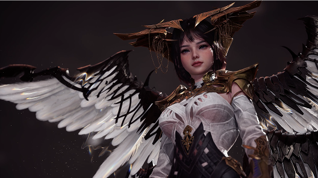
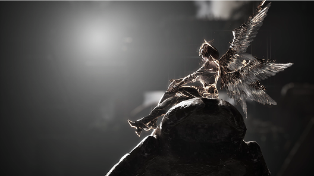
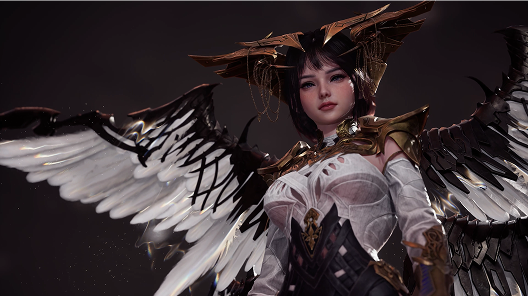
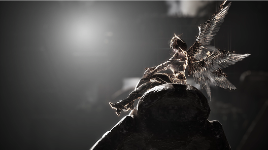